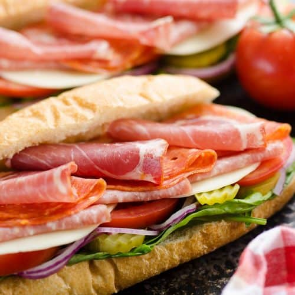

A Simple Cold Cut

In this beautiful display, we have an Italian cuisine decked with only the finest ingredients.
This Italian cold cut sandwich is decked with wonderful meats, such as, capocollo, salami,
calabrese. Fresh vegetables, provolone, and the finest olive oil in town.
Here's whatcha need!
- 3 deli hoagie buns
- 6 oz. variety pack of thin sliced Italian salami, Capocollo, Calabrese
- 6 slices of Provolone cheese
- Choice of spinach, lettuce, tomato, onion, pickles, banana peppers, and olives
- Mayonnaise
- Dijon Mustard
- Olive Oil
Now let's prepare it!
- Slice the hoafie buns lengthwise and top with vegetables, provolone, olive oil, and the meats!
- If serving immediately, dress each sandwich with Mayonnaise and Dijon and cut in half.
- If serving later, wrap each sub in cling wrap and store refrigerated up to 48 hours.